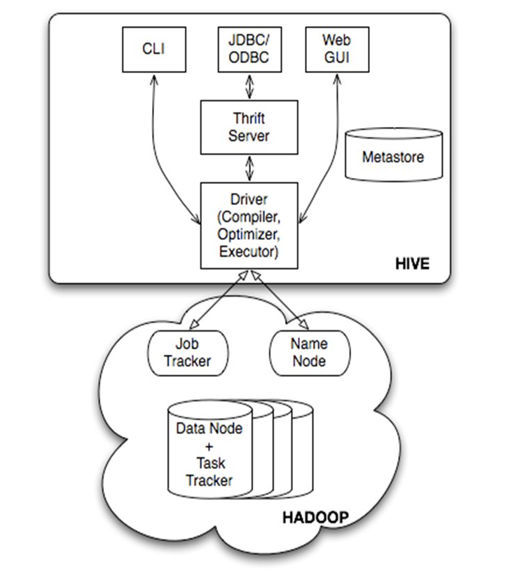
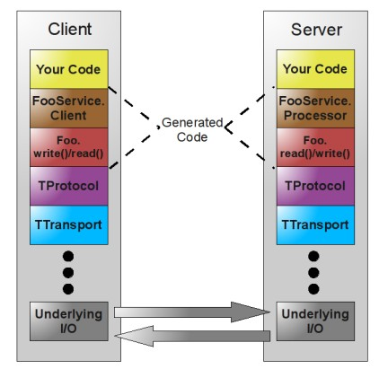

0. 问题引出
从疑问出发，寻根问底探究原理：
- Hive CLI/Hive Beeline/Hive JDBC断开连接之后，运行在Yarn上的任务是否继续运行？
- 我们知道JDBC是无法做缓存的，那么HUE是如何改善查询速度的？
本部分研究第一个问题，即客户端的状态是否影响Yarn上正在运行的任务。
首先我们从现象谈起然后逐渐找到问题的答案，既是一个解疑的过程也是一个探究研究问题思路的过程，更是一个增长知识的过程。
1. 现象描述
在Hadoop生态中执行Hive任务时，经常会出现各种各样的问题。今天发现了一个特别有意思的事情，执行调度的同学说他们执行的任务，在beeline调用端任务失败，但业务同学去数据库查看相应的数据记录，初步发现没有异常同步成功。这就引起了一个问题：当beeline异常断开时，当前运行的yarn的任务是否同步退出？还是继续执行完成？
根据这个问题，我首先做了现象的重现，结果发现：断开连接之后，执行在yarn上的任务会同步结束。分别通过HIVE CLI、Beeline、JDBC三种方式做得测试，结果都表明断开连接之后，任务无法接续运行。除了一种情况那就是HIVE CLI模式下，直接通过KILL命令杀死Hive进程，Hive客户端的JVM直接退出，但正在Yarn上运行的任务未退出继续运行，直到结束。
2. 三种访问Hive的路径

其中Hive Beeline使用的也是Thrift API访问Hive，其基本原理与JDBC访问类似。
3. 寻根问底
3.1. Hive CLI
- 主要类：org.apache.hadoop.hive.cli.CliDriver
ctrl+c方式断开：
CliDriver注册了信号处理：privateprivate boolean interruptRequested; @Override public void handle(Signal signal) { boolean initialRequest = !interruptRequested; interruptRequested = true; // Kill the VM on second ctrl+c if (!initialRequest) { console.printInfo("Exiting the JVM"); System.exit(127); } // Interrupt the CLI thread to stop the current statement and return to prompt console.printInfo("Interrupting... Be patient, this might take some time."); console.printInfo("Press Ctrl+C again to kill JVM"); // First, kill any running MR jobs HadoopJobExecHelper.killRunningJobs(); TezJobExecHelper.killRunningJobs(); HiveInterruptUtils.interrupt(); }通过以上的源码可以看出，如果我们使用 ctrl+c 命令会触发Kill操作，依次处理了 HadoopJob 、TezJob 以及Hive的退出操作；如果前后两次使用 ctrl+c 命令，那么直接Kill JVM。
直接Kill -9方式退出Hive：针对Yarn MR任务模式，对于LocalMRJob不做讨论。
通过阅读源码：} else if (cmd_trimmed.startsWith(} else if (cmd_trimmed.startsWith("!")) { String shell_cmd = cmd_trimmed.substring(1); shell_cmd = new VariableSubstitution(new HiveVariableSource() { @Override public Map可以看出CliDriver对于命令的处理是通过 调用外部线程 进行的。如果直接结束JVM，那么外部线程没有影响继续运行，所以我们看到的表象就是任务继续运行知道运行结束。
3.2. Beeline
- 访问主类： org.apache.hive.beeline.BeeLine
通过ctrl+c方式断开：通过ctrl+c方式断开连接，Hive会捕捉到相应的信号，从而进行相关处理。信号处理的handler定义如下
## Apache Hive： Beeline private Statement stmt = null; SunSignalHandler () { // Interpret Ctrl+C as a request to cancel the currently // executing query. Signal.handle (new Signal ("INT"), this); } public void setStatement(Statement stmt) { this.stmt = stmt; } public void handle (Signal signal) { try { if (stmt != null) { stmt.cancel(); } } catch (SQLException ex) { // ignore } }从处理的代码中可以看出，如果出现 ctrl+c 信号，Hive会取消目前相关操作。
异常断开：包括超时、宕机等异常情况
如果是Thrift RPC的连接断开，那么从源码中可以看出HIVE_SERVER2_CLOSE_SESSION_ON_DISCONNECT("hive.server2.close.session.on.disconnect",HIVE_SERVER2_CLOSE_SESSION_ON_DISCONNECT("hive.server2.close.session.on.disconnect", true, "Session will be closed when connection is closed. Set this to false to have session outlive its parent connection.")如果connection断开，那么session会立马被关闭，进而HiveServer2关闭session的操作，如下所示
## ThriftBinaryCLIService ThriftCLIServerContext context = (ThriftCLIServerContext) serverContext; SessionHandle sessionHandle = context.getSessionHandle(); if (sessionHandle != null) { LOG.info("Session disconnected without closing properly. "); try { boolean close = cliService.getSessionManager().getSession(sessionHandle).getHiveConf() .getBoolVar(ConfVars.HIVE_SERVER2_CLOSE_SESSION_ON_DISCONNECT); LOG.info((close ? "" : "Not ") + "Closing the session: " + sessionHandle); if (close) { cliService.closeSession(sessionHandle); } } catch (HiveSQLException e) { LOG.warn("Failed to close session: " + e, e); } }此处cliService的关闭最终会导致 HiveSessionImpl 的关闭操作，其中关闭路径为：CLIService.closeSession—>SessionManager.closeSession—> HiveSession.close
## HiveSessionImpl try { acquire(true, false); // Iterate through the opHandles and close their operations Listops = null; synchronized (opHandleSet) { ops = new ArrayList<>(opHandleSet); opHandleSet.clear(); } for (OperationHandle opHandle : ops) { operationManager.closeOperation(opHandle); } // Cleanup session log directory. cleanupSessionLogDir(); HiveHistory hiveHist = sessionState.getHiveHistory(); if (null != hiveHist) { hiveHist.closeStream(); } try { sessionState.resetThreadName(); sessionState.close(); } finally { sessionState = null; } } catch (IOException ioe) { throw new HiveSQLException("Failure to close", ioe); } finally { if (sessionState != null) { try { sessionState.resetThreadName(); sessionState.close(); } catch (Throwable t) { LOG.warn("Error closing session", t); } sessionState = null; } if (sessionHive != null) { try { Hive.closeCurrent(); } catch (Throwable t) { LOG.warn("Error closing sessionHive", t); } sessionHive = null; } release(true, false); } 从这里可以看到Session通过迭代将所有的操作逐渐关闭，并清除Session相关日志、关闭任务历史日志流。
3.3. Hive JDBC
- 访问主类：org.apache.hive.jdbc.HiveDriver
- 通过ctrl+c方式断开/异常断开
对于Hive JDBC这种连接方式而言，不存在ctrl+c直接断开RPC连接这种说法。我们通过程序测试的话，ctrl+c直接退出或kill的是我们的程序[JVM]，断开程序之后session连接自然断开。
这里的处理方式如Beeline类似，同样是HiveServer2通过session来管理任务的退出。
3.4 Thrift概述
Thrift是由Facebook提出的一种RPC/序列化框架贡献给了Apache，主要包括了代码生成机制、Protocol定义与传输、Server服务层等。
3.4.1 主要组成
- TProtocol : 数据编码解码，主要包括TBinaryProtocol、TJSONProtocol、TCompactProtocol[密集压缩]、TDebugProtocol[用户易读的方式]]]
- TTransport : 数据传输，主要类型包括TFileTransport、THttpTransport、TSocket、TZlibTransport【TBufferedTransport、TFramedTransport、TMemoryBuffer】
- TServer : 服务类，主要有TSimpleServer、TThreadPoolServer[标准阻塞式IO的多线程服务器]、TNonblockingServer[费阻塞多线程模式]
- TProcessor : 负责调度用户定义的接口
3.4.2 Thrift架构

4. 问题是否解决
通过以上分析可以得出结论：
- Hive Cli模式下，直接Kill -9结束当前的Hive进程，是无法让运行在Yarn上的任务退出，原因在于实际执行任务的另有其人；
- 使用Beeline或JDBC连接Hive时，可以设置hive.server2.close.session.on.disconnect=false来阻止session的关闭操作[未测试]；
我们基本获知了Hive通过几种方式访问集群资源时，访问的方式、驱动主类、程序退出资源释放的流程等内容。因此，以上的分析基本上解答了我们的问题。即除了Hive CLI方式通过[Kill -9]直接退出JVM之外，其他情况基本上都会停止Yarn任务的运行。
本博客所有文章除特别声明外，均采用 CC BY-SA 4.0 协议 ，转载请注明出处！